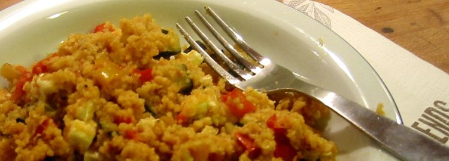
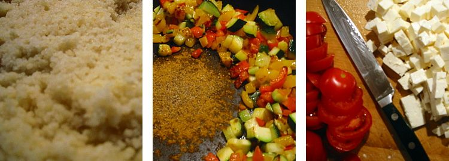

@charak
@charakCouscous mit Gemüse
Ich mag Gerichte, die sich mit wenig Aufwand zubereiten lassen und die trotzdem gesund sind. Um Couscous mit Gemüse zu kochen, brauche ich nur etwa 20 Minuten. Das Rezept lässt sich problemlos variieren, fehlende Zutaten (z. B. Kreuzkümmel) nach Geschmack ersetzen, die Mengen nach Belieben anpassen.

Zutaten (für 4 Portionen)
1 große Zucchini ¹
Öl zum Anbraten
250 g Couscous
350 ml Gemüsebrühe (Wassermenge hängt vom Couscous ab)
200 g Kirschtomaten
1 Pck. Fetakäse
Curry
Pfeffer
1 Spritzer Limettensaft ²
Salz, Paprikapulver, Kreuzkümmel, evtl. Kurkuma
optional: getrocknete Aprikosen oder Rosinen
¹ alternativ: 1 Aubergine
² alternativ: Zitronen- oder Orangensaft
Zubereitung
Das Gemüse waschen, die Paprikaschoten entkernen. Paprika und Zucchini kleinschneiden. Eine Pfanne heiß werden lassen, etwas Öl hinein und die Paprikastückchen darin anbraten. Wenig später die Zucchini dazugeben und mitbraten.
Den Couscous in einen Suppenteller oder in ein Schüsselchen geben (die Menge sollte maximal zwei Drittel des Behältnisses füllen), darunter das Brühpulver für die Gemüsebrühe mischen. Das Wasser (z. B. im Wasserkocher) erhitzen, über den Couscous gießen und ein wenig verrühren. Jetzt muss der Couscous etwa 5 Minuten quellen (länger schadet nicht).
Derweil die gewaschenen Kirschtomaten schneiden, ich bevorzuge dicke Scheiben. Den Fetakäse fein würfeln.

Wenn Paprika und Zucchini leicht Farbe bekommen haben, in der Mitte der Pfanne etwas Platz machen. Auf die freie Fläche ordentlich Curry geben (ich nehme etwa 1 TL, für manche zu viel), Pfeffer dazu. Beide Gewürze kurz anrösten, das verstärkt ihr Aroma. Nun alles mischen und die Kirschtomaten dazugeben. Weiterbraten lassen.
Jetzt geht’s ans Würzen: mit Limettensaft, Salz, Paprikapulver, Kreuzkümmel und eventuell extra Kurkuma (ist eigentlich schon im Curry dabei). Ich versuche eine Balance zu finden, so dass kein Gewürz zu sehr hervorsticht, man aber salzig, scharf, sauer und eine warme Süße schmecken kann. An dieser Stelle können getrocknete Aprikosen (zerkleinert) oder ein paar Rosinen ergänzt werden. Es darf ruhig intensiver schmecken, der Couscous und Fetakäse schwächen alles wieder etwas ab.
Apropos Couscous: Nachdem er gequollen hat, einfach mit in die Gemüsepfanne geben und unterrühren. Vorsicht: Hitze etwas reduzieren, damit der Couscous nicht anbrennt. Am Schluss verteile ich die Fetawürfel vorsichtig auf der Mischung und lasse sie noch einige Augenblicke warm werden. Sie schmelzen an der Pfanne fest, also besser erst vor dem Servieren richtig unterheben.
---
Rubrik(en): #methodik